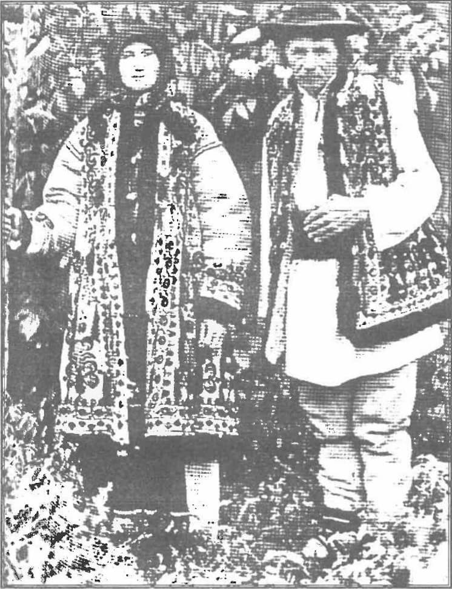
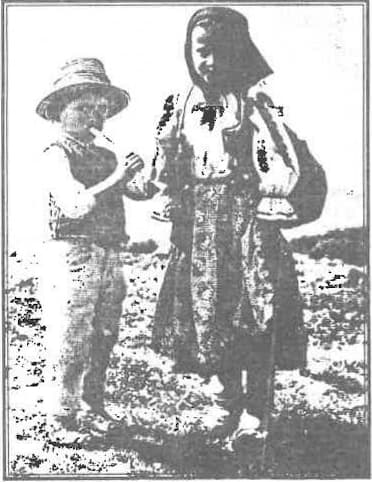
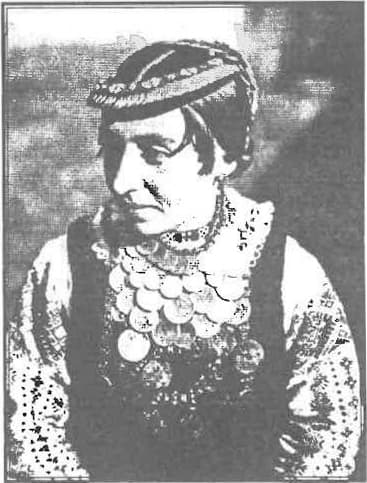
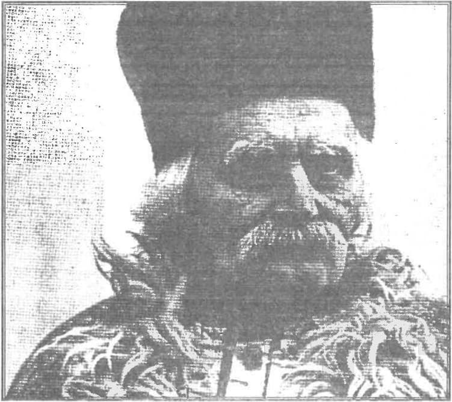

Lăcomia pântecelui este socotită de Spiritualitatea Bisericii de Răsărit (ca să preluăm o formulare a lui Vladimir Lossky) printre păcatele capitale, de moarte (alături de mândrie, invidie, iubire de arginți, desfrânare, trândăvie, mânie), constituind totodată și patimi. Mai mult chiar, enumerarea patimilor sau a păcatelor capitale începe uneori chiar cu lăcomia. Poate că lucrul acesta se explică și prin faptul că hrănirea este obligatorie viețuirii sau supraviețuirii ființei umane, așadar este o funcție biologică cu care omul este confruntat în permanență. Unele interpretări spun că Dumnezeu a rânduit ca omul să se hrănească pentru a înțelege că nu are viață de sine, în sine, ci trebuie să o primească (alimenteze) din afară.
Plecând pe urmele Sfinților Părinți, Părintele Dumitru Stăniloae (în Ascetica și mistica Bisericii Ortodoxe) a făcut o analiză foarte aprofundată a patimilor, a mecanismelor lor de declanșare și manifestare, precum și a gravelor lor consecințe la nivelul ontologic al ființei umane.
Câteva dintre elementele definitorii reieșite în urma acestei analize
Patimile reprezintă cel mai coborât nivel la care poate cădea ființa omenească. Omul patimilor nu mai este om al voinței, ci se spune despre el că este un om stăpânit, robit, purtat de patimi. Un om împătimit. Aproape orice patimă caută să reducă pe semeni la treapta inferioară a unor obiecte.
- În patimi se manifestă o sete fără margini, care-și caută astâmpărarea, și nu și-o poate găsi. Ființa umană, având o bază spirituală, are o tendință spre infinit care se manifestă și în patimi, dat în chip pervers, căci în loc să se îndrepte spre autenticul infinit, care este de ordin spiritual, eșuează în obiective finite de ordin material. În loc să fie stăpânul a toate, omul devine robul lor. Pe de o parte, ea caută infinitul; pe de alta, se alege cu nimicul.
- Patima este un nod de contraziceri. Ea este expresia unui egoism, vrând să facă toate lucrurile să graviteze în jurul său, ca centru privilegiat, dar, în fapt, ea face ca lumea, cu ispitirile ei, să-i fe centrul tuturor preocupărilor.
- Patima este astfel ceva irațional. Totul pe lume este rațional, având temeiul într-o rațiune divină, numai patima este irațională (Părintele îl citează pe Sfântul Maxim Mărturisitorul). Cu toate că omul realizează pe undeva nimicnicia și zădărnicia pornirilor și poftelor sale, el nu se poate sustrage lor. De pildă, lacomul știe că nici o mâncare nu-i va satisface vreodată lăcomia, oricât ar consuma din ea. Și atunci, rațional ar fi ca el să nu se lase chinuit de această patimă.
- Patimile produc o sfâșiere și o dezordine în ființa omului, pentru că, oricât de căzut, spiritul nu poate fi anihilat total, și, atunci, el își plânge condiția în care a ajuns și își cere drepturile existențiale, chiar dacă adesea fără ca omul împătimit să fie prea conștient de aceasta. Mai mult chiar, patimile produc o dezordine și în relațiile dintre subiectul lor și semenii lui. De multe ori, patima se întinde de la primul ei subiect înspre viața altuia, Lăcomia unuia provoacă lăcomia altuia, ca apărare a aceluia de lăcomia primului. De aceea, se poate spune că patimile produc și întrețin haosul între oameni.
- În fond, toate patimile sunt opusul iubirii adevărate; singura care restabilește armonia normală între oameni.
Rădăcinile tuturor patimilor stau în iubirea de plăcere, iubirea de slavă și iubirea de argint
Cea dintâi ar fi o sursă mai apropiată și a lăcomiei pântecului. După Marcu Ascetul, omul nu săvârșește nici un păcat, dacă nu-l biruie și nu-l iau în stăpânire mai întâi uitarea, nepăsarea și neștiința, toate cu referire la Dumnezeu. Iar pe acestea le naște plăcerea, odihna, iubirea slavei de la oameni și împrăștierea. Iar pricina cea dintâi și maica lor este iubirea de sine, cu alte cuvinte, iubirea nerațională de trup și alipirea pătimașă de el.
Ținând cont că la împătimire se adaugă foarte adesea și obișnuința, plăcerea ascunsă în patimă îl poartă pe om, pe nesimțite, până în fundul abisului.
Sigur, lăcomia are un spectru mult mai larg decât cel al pântecului, dar parcă în legătură cu acesta ea este mai vizibilă. Și, în plus, lăcomia pântecului pare a fi imaginea perceptibilă cea mai sugestivă pentru orice tip de lăcomie. Ea este comparată adesea cu cea a porcului, numai că ceea ce la porc este ceva firesc, la om este total nefiresc și exprimă clar o defecțiune spirtuală. „Cine se îndestulează cu mâncarea se aseamănă cu animalele și cu fiarele: cu tigrul, cu leul, cu ursul și cu porcii, iar nu cu oamenii” (Sfântul Ioan Gură de Aur).
Lacomul își face din pântece „dumnezeul lui” [Filipeni 3, 19]1, el face din simțul gustului și din funcțiile digestive centrul și esența ființei sale. Pântecele devine astfel „împăratul patimilor” (Grigore Sinaitul), atunci când omul pune dorința de hrană și plăcerea de a o consuma înaintea doririi lui Dumnezeu. Predându-se plăcerii trupești, omul se lipsește de desfătarea de cele duhovnicești.
Scriitorii ascetici socotesc că la cei mai tineri, lăcomia pântecelui le produce pe toate celelalte
Căci ea pune în mișcare pofta desfrânării: „Multa mâncare și deasa mâncare sunt cauza desfrânării” (Maxim Mărturisitorul), și amândouă acestea au nevoie de bani pentru a se satisface, iar cel ce se vede lipsit de obiectele care satisfac aceste trei patimi se întristează, precum dacă vrea cineva să i le răpească, sau să pună mâna pe ele înaintea lui, se mânie. La cei mai în vârstă însă, principala patimă este mândria. Dar slava deșartă și mândria pot fi și ele un efect al lăcomiei și al avuției adunate.
Dată fiind structura duală a omului, sunt patimi ale trupului și patimi ale sufletului. Lăcomia pântecelui este plasată de Sfântul Ioan Damaschin în fruntea patimilor trupești, unde mai aflăm, dintre cele în legătură cu hrana, nesăturarea, desfătarea, beția, mâncarea pe ascuns2. Dar strânsa unitate dintre trup și suflet face ca patimile trupești să fie împletite cu cele sufletești sau să se condiționeze reciproc. Ca atare chiar dacă lăcomia pântecului pare un păcat pur trupesc, ea are implicații sufletești; sufletul este în fond cel care conduce la ea, dorind felurite mâncăruri.
Conform Părinților filocalici, sufletul se împarte în trei: în rațiune, iuțime și poftă. Lăcomia pântecelui face parte dintre păcatele părții poftitoare a omului, alături de nesăturare, beție, curvie, preacurvie, necurăție, desfrânare, iubire de avuții, poftă de slavă deșartă, de bani, de bogăție și de plăcerile trupești.
Lăcomia pântecelui se vădește în ceea ce privește cantitatea prin plăcerea de a mânca mult, peste nevoile reale ale trupului, iar în ceea ce privește calitatea, prin căutarea unor mâncăruri cât mai alese, cât mai rafinate. Lăcomia stimulează imaginația, dând naștere celor mai fanteziste și mai inedite meniuri.
Mecanismul care face posibilă lăcomia pântecelui este pus în mișcare de căderea omului
În urma ei, în firea omului au „odrăslit”, cum se exprimă Părintele Dumitru Stăniloae, afectele. Și el le citează pe acestea: pofta după mâncare, plăcerea de mâncare, frica, întristarea. După cum se vede, două dintre ele aparțin hrănirii. Afectele nu țin de voință și sunt chiar necesare firii omenești pentru conservarea ei. Asceza nu este chemată să le desființeze, ci numai să le supravegheze i să le țină în frâu.
În mod evident, Dumnezeu a pus o plăcere în consumul hranei (cel puțin asta pare să spună exprimarea biblică despre pomii „cu roade bune de mâncat”). Plăcerea aceasta vine în mare parte tot ceea ce se adaugă actului de a mânca, dar din mâncarea în sine. Derapajul intervine atunci când plăcerea mâncării devine un scop în sine, mult exagerat, dând iluzia că dorul infinit după veșnicie, sădit de Dumnezeu în om, poate fi astâmpărat de mâncare sau băutură. În loc de cale de comunicare cu Dumnezeu și cu oamenii, hrana devine piedică și motiv de sminteală. Această patimă nu privește hrana în sine, ci constă în felul greșit în care omul se folosește de ea, când o folosește întru îmbuibare. Așadar nu în a mânca stă patima, ci în starea sufletească a omului și în scopul pentru care o face. Lăcomia, inclusiv cea a pântecului, se mai caracterizează și prin faptul că niciodată nu e satisfăcută: cu cât consumi mai mult, cu atât ai vrea și mai mult. Este ceea ce semnalează și Sfântul Ioan Scărarul: „Demonul lăcomiei pântecelui se așează în stomac și nu îl lasă pe om să se sature: săturat strigă că e lipsit și ghiftuit și plesnind de sătul, țipă că îi e foame”.
Pericolul este general, pentru: că orice masă luată fără luare aminte poate aluneca în lăcomie. În felul acesta, lăcomia pântecului se poate strecura parșiv chiar în cursul unor gesturi care s-ar dori ale iubirii și ale întâlnirii întru prietenie.
Urmările lăcomiei pântecelui
Sunt mult mai grave decât ar părea la prima vedere, ele depășind cadrul fizic (trupesc). Ca, în general, orice alt păcat grav, lăcomia pântecelui nu este dăunătoare numai prin sine, dar și prin faptul că se însoțește cu multe alte păcate, iar pe unele chiar ea este aceea care le generează direct sau indirect. Mulți părinții privesc lăcomia ca pe „rădăcina tuturor relelor” (Sfântul Ioan Scărarul) sau „maica tuturor patimilor” afirmând că „mâncarea multă dărâmă virtuțile” (Sfântul Ioan Casian). Tot așa, Sfântul Diadoh al Foticeii observă cum „Trupul îngreunat de mulțimea mâncărilor face mintea molâie și leneșă” ducând la trândăvie și negrijă (lene), iar Sfântul Ioan Scărarul consideră că o mulțime de gânduri pătimașe se iscă în suflet pornind de la lăcomia pântecului.
În ceea ce privește însoțirile, poate că cel mai adesea lăcomia pântecului se însoțește cu beția. Tot des, ea se însoțește cu somnul prea mult. Omul slăbește în toate ale voinței sale, se simte îndemnat spre desfrânare, iar de aici vin o mulțime de alte ispitiri și căderi. Un leac eficient, din acest punct de vedere, îl reprezintă vegherea cu rugăciune în vremea nopții. Însă însoțirea cea mai gravă este cea cu mândria. Atât lăcomia, cât și mândria își au rădăcina în iubirea egoistă de sine, ca un absolut autonom și independent. „E clar, zice Sfântul Maxim Mărturisitorul, că cine posedă egoismul, posedă toate patimile”. Egoismul reprezintă o rupere de Dumnezeu, ca centru al existenței umane.
Sfântul Ioan Scărarul alcătuiește o listă mai lungă cu păcatele care pot deriva din lăcomia pântecelui, fără ca aceasta, desigur, să fie exhaustivă: risipa, ilegalitatea, jurământul mincinos, beția. furtul, senzualitatea, răpirea, lingușirea, nerușinarea, nesăturarea. Pe toate acestea le consideră progeniturile și rodul lăcomiei pântecelui.
Dar poate consecința cea mai gravă este cea care se întrevede în final, așa cum ne-o enunță Sfântul Ioan Damaschin: poftitorul disprețuiește pe Dumnezeu și poruncile Lui dumnezeiești, uită de nobila sa obârșie dumnezeiască, se sălbăticește față de aproapele, își întunecă rațiunea și n-o mai lasă să privească spre adevăr.
*
Fiecare patimă este opusul unei virtuți
Patimilor trupești le corespunde, la Sfântul Ioan Damaschin, o listă la fel de lungă de virtuți trupești3. Cele privind hrănirea sunt, după el, acestea: înfrânarea, postul, foametea, setea, mâncarea uscată, mâncarea târzie, mâncarea puțină. Scopul creștinului este depărtarea de patimi și însușirea virtuților. În orice caz, remediul cel mai sigur pentru stingerea lăcomiei pântecelui este postirea, așa cum este ea rânduită de Biserică. Aproape toate pornirile pătimașe slăbesc prin post. Înfrânarea îndeobște, este recomandabilă. Alte mijloace de a evita patimile și de a câștiga virtuțile corespunzătoare sunt: seriozitatea în slujirea lui Dumnezeu, suferința, sărăcia (nu mizeria!), împărțirea averilor la săraci, dorirea după bunurile viitoare nemuritoare, dorul după Împărăția lui Dumnezeu și străduința de a fi cu adevărat fiu al Tatălui ceresc. Textele ascetice spun că atunci când omul este în putere, trupul mai poate fi domolit și prin osteneli4.

În afară de postire, pentru stăpânirea lăcomiei pântecelui se cere o hrănire adecvată, cu o hrană adecvată. Din punct de vedere cantitativ, se cere multă ponderație. Omul este îndemnat mai degrabă să guste decât să mănânce. Sfântul Pavel arată că Dumnezeu a făcut bucatele „spre gustare cu mulțumire” [1 Timotei 4, 3]. În sensul acesta (al gustării și al mulțumirii) se rostesc și rugăciunile de binecuvântare a oricăror ofrande de bucate. Gustarea este eminentă în cazul Euharistiei. „Gustați și vedeți că bun este Domnul”, spunea profetic David [Psalmul 33, 8). Ca atare, se impune ca să nu se mănânce doar pentru plăcerea de a mânca, să nu se mănânce până la săturare, ci când te ridici de la masă să simți că ai mai putea mânca. Din punct de vedere calitativ, se cuvine ca hrana să fie cât mai simplă, chiar austeră. Abținerea liberă de la (prea multă) carne este recomandabilă. De asemenea să fie evitate mâncăruri care îngrașă5, precum și cele care aprind simțurile. Evitarea lăcomiei face posibilă smerenia și cumpătarea la vorbă.
Apoi, masa să se desfășoare cu o anumită rânduială, cu binecuvântare și cu mulțumire către Dumnezeu, la început și la sfârșit, încât să înlesnească întâlniri izbutite cu sine, cu oamenii, dar îndeosebi cu Dumnezeu. „Ori de mâncați, ori de beți, ori altceva de faceți, toate spre slava lui Dumnezeu să le faceți” [1 Corinteni 10,31].
Iată cum o vede această rânduială Sfântul Efrem Sirul, într-un ciclu de unsprezece Imne ale binecuvântării mesei
- Nu trebuie mâncat ca animalele, se cuvine să fii sobru.
- A mânca este un prilej de a-L slăvi pe Dumnezeu, de a-L lăuda.
- Totdeauna masa trebuie începută cu binecuvântarea lui Dumnezeu.
- Este natural ca invitații la masă să mulțumească lui Dumnezeu.
- Răsplata pentru un bun comportament pe toată durata meselor va veni în lumea ce va să vie.
- Creștinii pot lua ca model comportamentul apostolilor la Cana sau în ale ocazii, ca de pildă la înmulțirea pâinilor.
- Hristos este acela care prezidează orice ospăț, în casa unui creștin.
- Cumpătarea în ceea ce privește consumul de vin este recomandabilă.
- Hrana trebuie să slujească la restabilirea forțelor oamenilor.
- Nu trebuie să pălăvrăgești prea mult. Se poate vorbi la masă, dar numai abordând subiecte înțelepte: doctrina, sobrietatea, puritatea, Masa Împărăției, abstinența, Evanghelia etc.
- Uneori lecturile sfinte însoțesc mesele. Cântările, ca fapte ale harului și ale slăvirii, sunt acceptate și practicate. Se folosește uneori țitera.
Toate aceste reguli sunt valabile până astăzi pentru creștini.
Postirea
Postul constituie una dintre componentele principale ale ascezei în multe dintre spiritualitățile lumii. Se poate constata că postul a însoțit din totdeauna acțiunea vitală de a mânca. Parafrazând pe autorul Ecclesiastului, se poate spune că este un timp pentru a mânca de toate și un timp pentru a posti. Postul ține de ritm, de ritmul cosmic al vieții. Lumea este creată de Dumnezeu cu un anumit ritm care-i dă posibilitatea de a fi vie și de a fi frumoasă. Omul cu atât mai mult. Dacă ne-am referi numai la pulsarea sângelui sau la respirație, la trezie și la somn, la zi și la noapte, la ciclul anotimpurilor, la sărbători etc. etc. În artă (poezie, muzică, plastică, arhitectură, dans, film etc.) lucrul acesta poate fi sesizat cu mai multă evidență. Prin post omul intră în ritm cu ceilalți, în ritm comunitar, în sincronism și în armonizare cu evenimente majore din istoria mântuirii (ce-a fost odată este mai lesne actualizat, devine mai ușor astăzi), dar și cu cei cu care împărtășește același set de valori majore, adevărate pe această lume.
Postul nu este atât o restricție, cât, mai degrabă, un alt fel de a mânca, un alt fel - complementar - de a te bucura de hrană. Postul adevărat este afirmativ. Impune o rânduială de a mânca întru viață, depășind simpla abstinență. Acesta ar fi un fals post, până la urmă. Postul nu poate scuza diverse abateri comportamentale. Postul adevărat se ține de bună voie, prin liberă alegere. Ca omul să mănânce este ceva natural; ca el să postească este prin alegere proprie. Așadar, postul este liber și liberează, în același timp. Ca să dai de plăcerea postului trebuie să-l porți în inimă. Deși exprimat la nivel fizic, material, postul constituie în primul rând o nevoie spirituală vitală. Dar, în final, nu neapărat numai spirituală, căci și trupul are importante beneficii.
Chiar dacă aproape totdeauna este legat într-o măsură mai mare sau mai mică de penitență, postul nu constituie o pedeapsă, ci un leac întru tămăduire
Cu cât omul înaintează în credință, cu atât rolul postului se amplifică în viața sa. Dar, după Sfântul Efrem, oricât de important ar fi el, postul este inferior iubirii (creștine) și, mai ales, adevărului (Versuri pentru Alee XXIX,32). Sfântul Efrem vede relație directă între post și adevăr: „În post să căutăm urma adevărului și după ea să ne punem noi pe calea spre Locașuri!” (Imnele Postului Mare 1,12). Este vorba, bineînțeles, de locașurile din rai. Dacă este o căutare, postul este și drumul acestei căutări, căutarea Adevărului (Hristos). Un drum către o țintă existențială nobilă. Se știe că adesea farmecul este drumul, iar o țintă lipsită de drumul ei parcă nu-și dezvăluie deplin savoarea. În creștinism, drumul și ținta una sunt, Hristos este Calea, dar este și ținta ei, împreună cu Tatăl [Ioan 14, 6]. Sărbătoarea întâmpinată cu post este mai deplină.
„Postire” în paradis
Pentru spiritualitatea creștină, istoria postului începe din Grădina Edenului, așadar deodată cu istoria hrănirii. Acolo, „Domnul Dumnezeu a făcut să răsară din pământ tot soiul de pomi plăcuți la vedere și buni la mâncare” [Facerea 2, 9], iar apoi EL „i-a dat lui Adam poruncă și i-a zis: «Din toți pomii raiului poți să mănânci, dar din pomul cunoștinței binelui și răului să nu mănânci»” [Facerea 2, 16-17]. Interdicția din paradis este, într-un fel, un îndemn la postire, la o reținere de la o hrană anume, întru prezervare a vieții și întru comunicare cu Dumnezeu. Interdicția aceasta era temporară, urmând să fie abolită în momentul maturizării spirituale a omului. Oricum, nu mai este de întâlnit o astfel de restricție în raiul eshatologic.

Imediat după cădere, avem de a face nu atât cu un post, cât cu restricții și prescripții privind hrănirea celor ce se află și doresc să rămână într-o comunicare cu Dumnezeul cel Viu. Astfel, Dumnezeu le recomandă oamenilor: „Tot ce se mișcă și tot ce trăiește fie-vă spre hrană; așa cum iarba verde, pe toate vi le-am dat. Numai carne cu viața ei - sângele - să nu mâncați” [Facerea 9, 3-4]. Credința celor vechi era că viața oricărui trup este în sângele lui. Pe măsură ce omul s-a maturizat spiritual, gama de prescripții se înmulțea și se detalia. Acestea s-au referit mai direct la poporul ales, care avea o relație privilegiată cu Dumnezeu. Astfel, în cartea Levitic avem un întreg capitol [11] dedicat „animalelor curate și necurate”, cele dintâi putând fi mâncate, cele din urmă nu. Necurăția animalului interzis se transmitea temporar omului care îl mânca sau care se atingea de el, ceea ce necesita, în consecință, tot soiul de curățiri, pe măsura maculării.
Rânduielile din Vechiul Testament priveau mai mult jertfirile decât postirea
Dar cele spre hrană constituind cel mai adesea materia jertfelor. O singură zi de post obligatorie era prevăzută, cea din Ziua ispășirii (Iom Kipur) (Levitic 16, 29-30). Mult mai numeroase erau posturile ocazionale, prilejuite de cele mai variate nevoi: înaintea împlinirii unor sarcini dificile [Judecători 20, 26; Estera 4, 26]; pentru iertarea unei greșeli [3 Regi 21, 27]; la cererea unei vindecări [2 Regi 12, 16-22]; ca plângere de întristare după moartea cuiva apropiat sau ca doliu [1 Regi 31, 13; 2 Regi 1, 12); după o văduvie [Iudita 8, 6; Luca 2, 37); după o nenorocire națională [1 Regi 7, 6; 2 Regi 1, 12; Baruh 1, 5; Zaharia 8, 19]; pentru încetarea unei calamități [Ioil 2, 12-17; Iudita 4, 9-13); pentru deschiderea luminii dumnezeiești și deslușirea vedeniei [Daniel 10, 3]; pentru pregătirea pentru întâlnirea cu Dumnezeu [Ieșirea 34, 28; Daniel 9,3].
Lumea Vechiului Testament ne oferă câteva exemple de mari postitori: Moise, care în două rânduri a ținut un post de patruzeci de zile [Ieșirea 24, 18 și 34, 28]; Iosua care, după cum mai mult ni se sugerează, de asemenea a postit de două ori [Ieșirea 24, 13-16 și 33, 11]; Ilie, care, și el, a postit patruzeci de zile [3 Regi 19, 8]; Daniel în Babilon trei săptămâni [Daniel 9, 3; 10, 3; Psalmul 69, 11]; David [2 Regi 12, 16]; profeții, în general (lucrul acesta, atunci când nu este menționat explicit, ni se sugerează).
Toate aceste postiri au avut urmări importante la nivel religios, în relația cu Dumnezeu, îndeosebi pentru salvgardarea dreptei credințe. Importante victorii spirituale ale Vechiului Testament au fost obținute folosind ca armă postul. De pildă, postul a prevenit căderea poporului ales pe când acesta se deplasa în pustie, la ieșirea din Egipt. Postul îi salvează pe niniviteni [Iona 3, 5].
Șirul de mari postitori ai Vechiului Testament este încheiat de Sfântul Prooroc Ioan Înaintemergătorul și Botezătorul, care face, de altfel, trecerea spre lumea Noului Testament. În pustia sa, Ioan nu mânca decât lăcuste și miere sălbatică. De altfel, multe din aceste posturi se petreceau în pustie, un loc mai propice unor postiri îndelungate6. Când este nevoie, Dumnezeu îi ajută pe cale minunată pe postitori ca să supraviețuiască. Astfel, Ilie, în pustietate, a fost hrănit de corbi [3 Regi 17,4].
Ca în multe alte cazuri, Hristos a dat El Însuși mai întâi exemplu de postire. Făptuirile văzute ale lui Hristos sunt precedate de post. El a fost dus în pustie de Duhul pentru postirea Sa de patruzeci de zile. „Și postind El patruzeci de zile și patruzeci de nopți, în cele din urmă a flămânzit” [Matei 4, 2]. La sfârșitul acestei postiri, Hristos a fost supus de diavol la o primă ispitire, care se referea la hrană, și anume aceea de a transforma pietrele în pâine, ispită căreia i-a rezistat. Ar fi putut, desigur, să-l biruiască prin mule alte mijloace, dar a ales calea postului, tocmai pentru a compensa într-un fel recuperator faptul că Adam a fost înșelat de diavol printr-un fruct devorat cu lăcomie. În principiu, este de reținut că orice străduință ascetică este amenințată de ispitiri mai teribile.
La luptă!
În Biserică foarte adesea se vorbește despre post în termeni militari. Viața omului în această lume este văzută de creștinism ca o luptă continuă contra diavolului și a ispitirilor lui, în vederea mântuirii. Este o chestiune de viață și de moarte: se poate câștiga sau se poate pierde această luptă, grație, printre altele, și felului de a posti. Nu va fi nici o scuză pentru cel care s-a lăsat biruit de pântecele său. Înainte de cădere și după cădere, Dumnezeu a propus omului postul ca armură de protecție și ca armă eficace de combatere a diavolului. După cum se observă, rolul lui este deodată defensiv și ofensiv. Este o armă care, bine mânuită, aduce totdeauna biruința, precum și cununile aferente acestei biruințe. Hristos Însuși l-a folosit în felul acesta atunci când a pornit lupta Sa văzută întru mântuirea oamenilor. Deși omul este mai înarmat atunci când se află în postire, atacurile vrăjmașului devin și ele mai intense tocmai acum, căci Satan lansează ispitirile sale mai abitir celor care postesc, pentru a-i deturna din drumul lor ascetic. Ca atare, se întâmplă nu rareori ca otrava ucigătoare a gândurilor rele să-l pătrundă pe creștin chiar în timpul postirii.
Biserica și postul
Posturile sunt date de Domnul, ca daruri de mare preț pentru o viețuire creștină adevărată. Biserica a însoțit marile momente ale istoriei mântuirii prin dedicarea de posturi, mai mult sau mai puțin lungi, mai mult sau mai puțin severe, după importanța sărbătorii, căci postul este legat organic de praznicul său. Postul pascal, numit și Postul Mare, este, fără îndoială, cel mai important dintre posturi, la fel cum Învierea este cea mai importantă dintre sărbători. Postul are totdeauna un rol de pregătire. Pentru Sfintele Taine, de pildă, n Biserica primară, catehumenatul se sfârșea printr-un asemenea post, în vederea Botezului. Tot așa, postul premerge și conduce la Euharistie. În sinteză, postul îl pregătește pe om pentru întâlnirea veșnică cu Dumnezeu, având un rol pedagogic.
Reducerea hranei trupești în perioada de post se caută a fi compensată cu sporirea hranei spirituale. Astfel, în prima săptămână a Postului Mare se face slujba Pavecerniței Mari, în cadrul cărora, de luni până joi, se citește Canonul cel Mare al Sfântului Andrei Criteanul, iar în ultima, cea a Patimilor, sunt în fiecare seară Denii, slujbe lungi. În Postul Adormirii Maicii Domnului se citește în fiecare seară Paraclisul Maicii Domnului.
Biserica învață că postul se cuvine a fi însoțit de rugăciune și priveghere, precum și de milostenie. Împreună sunt ca niște stâlpi și ca niște podoabe ale sfintei Biserici, care în esența ei este ascetică.
În postire, trebuie evitată gloria omenească. Hristos recomandă o discreție a postului, cuvântul Lui invitând mai degrabă la taină: „Tu însă, când postești, unge-ți capul și spală-ți fața” [Matei 6, 17]. În același timp, cel care postește nu trebuie să devină judecătorul celui care mănâncă [cf. Romani 14, 3]. Există un pericol real ca cel ce postește să cadă în păcatul mândriei sau în acela al îmbuibării cu bucate de post, ceea ce anulează efectele benefice ale postului.
Foloasele și roadele postului
Postul produce roade preacurate, duhovnicești în primul rând, foarte prețioase omului. Cum sufletul și trupul participă împreună la postire, împreună se folosesc de roadele ei. În post se află, deodată, odihnă și lucrare.
Binefacerile postului în viața creștinului sunt multiple: pedagogic, medical (pe de o parte este el ca un leac, iar pe de altă parte, bunii postitori devin ei precum niște leacuri pentru cei din jur), estetic, pregătitor pentru rai, mijloc de a-L lăuda și a-L slăvi pe Dumnezeu, de a comunica cu El etc.
Din punct de vedere creștin, postul are câteva componente antropologice care arată că este mai mult decât simplă abstinență cu o dedicație anume, de altfel importantă și ea, în sine.
Prin posturi, creștinul are posibilitatea să-și schimbe în chip mistic natura, posibilitatea transfigurării. Postitorii îi prefigurează pe viitorii locuitori ai raiului.
Una dintre componentele cele mai importante ale postului este cea de comunicare. Postul nu este o practică pur individuală, el favorizează exprimarea și împlinirea relațiilor omului, de la cea cu Dumnezeu la cea comunitară în adunarea euharistică, care este Biserica; și, în fond, orice relație. Oamenii postesc împreună, postind sunt într-un gând, trăirile lor sunt cât de cât unite printr-o bună orientare: evenimentul sărbătorit prin post, fie că el ține chiar de ziua respectivă de post, fie că vine la sfârșitul postului, încununându-l. În final, ținta este realizarea întâlnirii cu Dumnezeu și a asemănării cu El. Nu în ultimul rând, este înlesnită comunicarea cu sine. Ființa devine mai atentă la ea, la trăirile ei mai discrete, dar ființial importante, la prețul ei existențial, la măreția ei potențială.
Un posibil rezultat al postului este frumusețea, cum o dovedește episodul cu cei trei tineri, prizonieri la curtea lui Nabucodonosor, regele Babilonului [Daniel 1]. La capătul a zece zile de post cu legume și cu apă, ei s-au arătat cu o mină mai bună decât toți tinerii care mâncaseră din bucatele abundente ale regelui. Postul procură o îndoită frumusețe, căci împodobește și trupul, și sufletul. Pe de altă parte, postitorii lui Hristos sunt ca niște podoabe. Postul înfrumusețează, mai ales când este însoțit de rugăciune, Prin post se întinerește. Ce vis pentru fiecare om și pentru întreaga umanitate! Fecioria este mai bine păstrată cu ajutorul postului. La sfârșitul vieții, Hristos răsplătește posturile și fecioria (tot un fel de post) prin desfătări spirituale în rai.

Prin complexitatea sistemului de posturi și de postiri, omul constată mai direct că viața nu este otova, că zilele nu sunt trase la rîndea, că fiecare zi este diferit încărcată și își are importanța și farmecul ei, la scara istoriei mântuirii, dar și la nivel personal.
Postul eliberează de jugul lăcomiei. Dominația pântecelui nu convine libertății, este epuizantă și acaparantă.
Țelul final al sufletului, precum și al trupului, este Învierea, la care se ajunge și prin postire, Prin binefacerile obținute postind, sufletul și trupul sunt invitați împreună la Nunta mistică cu Hristos, Mirele veșnic, căci relația cu Hristos este una cu caracter nupțial.
Rânduiala postului în Biserica Ortodoxă de-a lungul unui an liturgic nu este deloc mecanică sau simetrică, și poate părea destul de încurcată unuia care nu este un participant direct la viața Bisericii
Într-un an, în mod normal, aproape jumătate din zile sunt de post. Totuși impresia lăsată este aceea că ar fi mai multe zile de dulce, întrerupte de zile de postire. Există o ierarhie a posturilor, precum și una a dezlegărilor, în conformitate cu ierarhia sărbătorilor.

Posturi anuale
Sunt patru posturi mai lungi:
- Postul Mare al Paștilor (șap- te săptămâni, însumând de fapt două posturi: unul de șase săptămâni care se încheie la Intrarea Domnului în Ierusalim - Florii, când se și face un mic popas alimentar, prin dezlegare la pește, și cel al Săptămânii Patimilor care premerge sărbătoarea Învierii Domnului); Postul cel Mare al Paștelui se desfășoară, din punct de vedere liturgic, între Duminica izgonirii lui Adam și Eva din rai și Duminica Învierii, după ce mai întâi s-a trecut prin Săptămâna Patimilor, cu alte cuvinte, între doi pomi hrănind spiritual: Pomul Cunoașterii binelui și răului, cu fructul lui otrăvit, și Pomul Vieții - Crucea, cu Fructul lui tămăduitor — Hristos;
- Postul Nașterii Domnului (15 noiembrie - 24 decembrie);
- Postul Adormirii Maicii Domnului (1-14 august);
- Postul Sfinților Apostoli (în mod normal ar trebui să înceapă în lunea de după Duminica „Tuturor Sfinților, prima după Duminica Pogorârii Sfântului Dub, ceea ce nu este posibil când Paștele cade foarte târziu, deoarece în mod normal în săptămâna de după Rusalii nu se postește; din cauza, însă, dublului calendar folosit în Biserica Ortodoxă — cel iulian pentru cele ce țin de Paști, cel gregorian pentru restul anului — a ajuns să aibă o durată variabilă, în funcție de cum cade într-un an Paștele și, respectiv Cincizecimea — Rusaliile; în cazurile extreme este redus la numai trei zile, cele premergătoare sărbătorii Sfinților Apostoli).
Postul Mare al Paștilor și Postul Adormirii Maicii Domnului sunt mai aspre, pe când celelalte două beneficiază de mai multe înlesniri (dezlegări)7. Duritatea postului ține seama de caracterul evenimentului căreia îi este dedicat: Nașterea aduce vădită bucurie, pe când Patimile premergătoare Învierii constituie prilej de penitență.
Postiri săptămânale
Se mai postesc toate miercurile și vinerile de peste an, cu excepția câtorva. Miercurea evocă vinderea lui Hristos, iar vinerea răstignirea Sa8.
Alte zile de post
Sunt două zile care impun postire aspră, indiferent în ce zi ar cădea. Este lesne de înțeles acest lucru din simpla pomenire a celor două sărbători: Zina Înălțării Sfintei Cruci (14 septembrie) și Tăierea Capului Sfântului loan Botezătorul (29 august). Practic, sunt zile de ajunare. Este încă un paradox al creștinismului acest tip de prăznuire prin postire.
Ajunuri
Cele mai mari sărbători ale creștinătății sunt premerse de zile de ajunare (în termeni populari post negru), în care nu se mănâncă nimic: Ajunul Crăciunului, Ajunul Bobotezei, Vinerea Mare a Paștilor. La acestea se mai adaugă primele patru zile ale Postului Mare, când în biserici se citește Canonul cel Mare al Sfântului Andrei Criteanul. De remarcat, că și caracterul ajunului nu este otova. Ajunul Crăciunului, de pildă, este mai blând decât restul ajunărilor9.
Dezlegări
Dacă posturile urmează în ierarhia lor sărbătorile, tot așa se poate spune și despre dezlegările din zile sau perioade de post că au ierarhia lor. Cele mai mari sunt dezlegările la toate sau zilele de harți, cum se mai numesc. Marile sărbători ale Nașterii (Crăciunului), Învierii (Paștilor), Pogorârii Sfântului Duh (Cincizecimii, Rusaliilor) sunt urmate de câte o săptămână de harți. Mai mult chiar, după Crăciun toată perioada până la Ajunul Bobotezei are acest caracter. Nu se postește nici în prima săptămână din perioada Triodului (care începe cu zece săptămâni înainte de Paști), cea numită a Vameșului și a Fariseului, tocmai pentru a atrage atenția în legătură cu pericolul mândriei, care dacă ajunge să însoțească postul îi afectează în mare parte roadele.
Zilele prevăzute în principiu a fi postite, pot căpăta dezlegări parțiale, ierarhia acestor dezlegări urmând-o de asemenea îndeaproape pe cea a sărbătorilor care le produc. Dezlegarea cea mai mare este la lapte și ouă. Ea apare în ceea ce mulți numesc Săptămâna Albă, cea care premerge Marele Post al Paștilor și care reprezintă astfel un fel de perioadă de trecere. Următorul nivel de dezlegare este dezlegarea la pește. Ea apare în Postul Paștilor numai de două ori, la Bunavestire (25 martie) și în Duminica Floriilor, în Postul Adormirii Maicii Domnului o singură dată, la Schimbarea la Față, dar în mai multe rânduri în Posturile Crăciunului și al Sfinților Apostoli. Următoarele trepte de dezlegare sunt la vin, apoi la ulei, cel mai adesea mergând împreună. Ele sunt notate numai în mineie și sunt mai puțin cunoscute și urmate de credincioși. În principiu, miercurile și vinerile sunt oprite de la vin și untdelemn, iar sâmbetele și duminicile dezlegate, chiar și atunci când se află în perioada marilor posturi. Este de observat că totuși uleiul este mai agreat, la o adică, decât vinul, fiind mai puțin periculos, dar ele fac totdeauna pereche la dezlegări.
Există pericolul real ca postul să devină oarecum formal
Adică să se respecte preceptele de opreliști, da nu și duhul lor, adică să se facă îmbuibare cu mâncăruri de post, care, de altfel, pot fi uneori la fel de sau chiar mai gustoase decât mâncarea de toate zilele10, care îngreuiază atât trupul cât și spiritul.
Sunt puține sărbătorile care dispun de dezlegări importante atunci când cad în zi de post: Boboteaza — total, Adormirea Maicii Domnului și Sfinții Apostoli Petru și Pavel — numai la pește, altele numai la vin și untdelemn.
În ceea ce privește prezența anumitor elemente pe masa jertfelor din biserică, care de cele mai multe ori au caracter comemorativ (pomenirea celor plecați din această lume) trebuie arătat că numai în ziua de Paști este îngăduit a aduce carne sau produse din carne. De altfel, și pentru brânză și ouă este prevăzută o rugăciune anume numai cu prilejul Paștilor. Rugăciunea care se face în mod curent pentru binecuvântarea ofrandelor face referință la episodul evanghelic cu înmulțirea a cinci pâini și doi pești [Matei 14, 14-22], ceea ce arată că acest tip de ofrandă ar fi de adus cu precădere.
Pe lângă rânduielile de mai sus, general prevăzute de biserică, oamenii își iau uneori anumite perioade de postire sau asprimi de postire suplimentare, cu gândul la rezolvarea unor probleme grave, personale sau ale celor apropiați la care țin în mod deosebit.
Biserica însăși poate recomanda în perioade de criză astfel de postiri de obște, la diverse niveluri (parohial, eparhial, național). În acest context, este de amintit un lucru excepțional pentru mentalitatea noastră de acum: după biruința de la Războieni, Sfântul Ștefan cel Mare a poruncit trei zile de post aspru (nu de chef!).
Cel mai adesea posturile aduc o intensificare a legăturii liturgice cu cei morți
Trei dintre perioadele importante de post ale anului sunt premerse de Moși, sâmbete de pomenire de obște ale morților. Lucrul acesta se petrece în sâmbăta ante-precedentă începutului postului respectiv: Moșii de iarnă înaintea Postului Mare al Paștilor, Moșii de vară înaintea Postului Sfinților Apostoli, Moșii de toamnă înaintea Postului Nașterii Domnului (al Crăciunului)11.
Apoi, în Postul Mare, cel mai important și mai aspru dintre posturi, sunt rânduite în fiecare săptămână Sâmbetele morților, și acestea având la șirul lor două capete care ies în evidență: Sâmbăta lui Toader (Sfântul Mucenic Teodor Tiron12, de la care, după tradiție, ni se trage coliva) și Sâmbăta lui Lazăr (fratele Mariei și al Martei, cel a patra zi înviat din morți de Hristos).
Dacă la Moși mâncarea este de dulce, la Sâmbetele morților ea este de post.
Manifestările de mai sus vin totodată și în întâmpinarea faptului că este bine să însoțești postul cu milostenia și cu un spor de rugăciune.
Note
1 Iată lista lor integrală: lăcomia pântecelui, nesăturarea, desfătarea, beția, mâncarea pe ascuns, iubirea de plăceri felurite, curvia, preacurvia, desfrâul, necurăția, amestecarea sângelui (incestul), stricarea pruncilor, împreunarea cu dobitoacele, poftele rele și toate patimile urâte și potrivnice firii, furtul, jefuirea celor sfinte (sacrilegiul), hoția, uciderea, orice moleșire trupească și bucurie de voile trupului, mai ales când trupul e sănătos, ghicirile, descântecele, farmecele, prezicerile, iubirea de podoabe, ușurătatea, moliciunile, înfrumusețările, vopsirea feței, pierderea vremii, umblarea fără rost, jocurile de noroc, reaua și pătimașă întrebuințare a lucrurilor dulci ale lumii, viața iubitoare de trup, care, îngroșând mintea, o face pământească și dobitocească și nu o lasă niciodată să tindă spre Dumnezeu și spre lucrarea virtuților.
2 „Iar virtuți trupești, mai bine zis unelte ale virtuților, care se nasc întru cunoștință și după Dumnezeu și duc pe om afară de orice fățărie și dorința de a plăcea oamenilor, la înaintarea în smerenie și nepătimire, sunt acestea; înfrânarea, postul, foametea, setea, privegherea, starea de toată noaptea, plecarea deasă a genunchilor, neîmbierea, mulțumirea cu o singură haină, mâncarea uscată, mâncarea târzie, mâncarea puțină, băutura de apă (sublinierea celor care țin de hrănire ne aparține), culcarea pe pământ, sărăcia, neaverea, austeritatea, neîmpodobirea, neiubirea de sine, singurătatea, liniștea, neieșirea din casă, lipsa, mulțumirea cu ce ai, tăcerea, procurarea celor de trebuință prin lucrul mâinilor, toată reaua pătimire și nevoință trupească și altele asemenea. Toate acestea sunt cât se poate de necesare și de folositoare când trupul e sănătos și tulburat de patimi trupești. Iar dacă e neputincios și cu ajutorul lui Dumnezeu a biruit acestea, nu sunt așa de necesare, întrucât sfânta smerenie și rugăciune întregesc toate” (www.filocalia.ro)
3 În Vechiul Testament era prevăzută, la mare preț, pentru jertfire lui Dumnezeu, grăsimea animalelor respective, cu precădere grăsimea de pe măruntaie, de pe intestine, de pe șolduri, de pe rărunchi, cea care acoperă lăuntrul și seul de pe ficat [Levitic 1; 3; 4; 7; 9 — în mai multe versete]. Se considera că „mireasma” arderii pe altarul de jertfă era foarte plăcută lui Dumnezeu. Chiar și în Noul Testament, pentru fiul risipitor, tatăl pune, pentru bucuria întoarcerii lui, să se taie „vițelul cel îngrășat” [Luca 15, 23]. În popor grăsimea a fost considerată, pe de o parte, un semn de bunăstare, iar pe de altă parte, și un semn de sănătate și de frumusețe („grasă și frumoasă” se spunea). În același timp, oamenii grași sunt considerați îndeobște a fi mai buni la suflet. Dacă ne vom uita însă la pictura bisericească, vom observa că toți sfinții sunt zugrăviți slabi. Ori că, cel mai adesea, așa erau ei cu adevărat, datorită eforturilor lor ascetice, fe că și atunci când, mai rar, poate că n-au fost așa, ci sunt reprezentați în starea eshatologică, care presupune un trup nestricăcios, transfigurat, subțiat [cf. 1 Corinteni 15, 35-54].
4 Cu toate acestea, sărbătoarea Paștilor este atât de mare încât, prin celebra Scrisoare a Sfântului Ioan Gură de Aur care se citește în noapte de Înviere, sunt poftiți la aceeași bucurare și cei care au făcut tot drumul postului, cât și cei care au ajuns pe el în al unsprezecelea ceas: „Cei ce ați postit și cei ce n-ați postit, veseliți-vă astăzi! Masa este plină, ospătați-vă toți! Vițelul este mult, nimeni să nu iasă flămând! Gustați toți din ospățul credinței! Împărtășiși-vă toți din din bogăția bunătății! Să nu se plângă nimeni de lipsă…”
5 Posturi cu astfel de motivații sau asemănătoare pot fi întâlnite până astăzi la credincioși fervenți, inclusiv la cei de la țară, fiind adesea chiar încurajate de Biserică, îndeosebi de mediul călugăresc.
6 Este știut că în limbile semitice vechi pustie și post au aceeași rădăcină (DBR în ebraica veche).
7 De altfel, Postul Crăciunului se și numește în popor postul vesel.
8 Așa cum evocă și Dimitrie Cantemir în a sa Descriptio Moldaviae, existau țărănci care posteau, după model călugăresc, și o a treia zi, lunea. Aceasta pentru a fi mai presus de fariseul din parabolă, care se mândrea cu cele două zile postite pe săptămână [Luca 18, 12).
9 Credința populară prevedea o serie de alte posturi de acest tip, care nu intrau în rânduielile Bisericii.
- Postul Maicii Domnului. Timp de șapte săptămâni post total de 24 de ore: în prima săptămână Luni, în a doua - marți, ș.a.m.d.
- Postul negru. Se ținea pentru un necaz important. Se aseamănă cu cel descris mai sus, ține tot șapte săptămâni, dar se poate începe în orice zi (când a venit necazul), nu neapărat lunea. Se ținea în pielea goală (!) și era însoțit toată ziua de închinăciuni și mătănii.
Se poate spune că postul era unul dintre mijloacele ascetice intens agreate odinioară de popor, îndeosebi de femei. Sigur, se pot vedea deosebiri de atașament la dorința de a posti, în funcție de regiune. Ea este mai puternică în Moldova și Bucovina, regiuni mai fervente, și mai palidă în Transilvania, unde influența catolicismului și a protestantismului se face simțită, uneori chiar și la nivelul clericilor.
10 Această mâncare se numește în mod curent de dulce sau de frupt.
11 La românii, practic orice sărbătoare mai importantă, și chiar și dintre acelea de medie cinstire, sunt însoțite de moși, de rugăciuni pentru cei mor și însoțite de ofrande făcute spre veșnică pomenirea lor. Astfel, avem Moșii de Sâmedru (sâmbăta de dinainte de 26 octombrie), Moșii de Hranghel (sâmbăta de dinainte de Sfinții Arhangheli Mihail și Gavriil - 8 noiembrie), Moșii de Ovidenie (21 noiembrie), Moșii de Crăciun (Ziua de Ajun / Ziua de Crăciun), Moșii de Florii (Sâmbăta lui Lazăr - cea dinaintea Floriilor), Moșii de Joi-Mari. Și mai sunt și alte zile de sărbătoare în cate românul ținea să fie împreună cu cei adormiți ai lui, și aceasta o făcea și prin intermediul alimentelor.
12 Este uimitor să observi cât de deasă este reprezentarea acestui sfânt în icoanele românești pe sticlă.
Comentarii